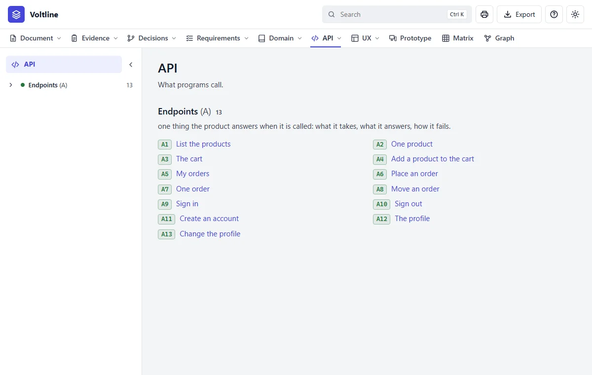
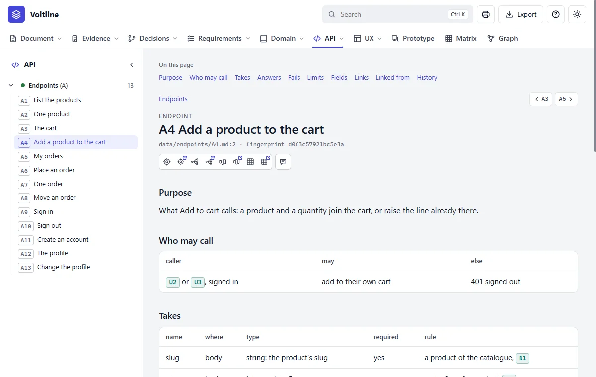

Part 3: Reading what you get
API
In everyday termsThe order counter for programs. An API is how one program asks another for something, the way you order at a counter: there's a fixed menu, you ask in a fixed way, and you get a fixed kind of answer. Each item on the menu is called an endpoint. If your product has no such counter, this module isn't there.
What it answersWhat can a program ask the product, and what comes back?
What's in it

The specification says what a calling program may send and what comes back. It doesn't say how the answer is worked out behind the counter.
An endpoint, part by part

- 1Purpose. What it's for, in a sentence.
- 2Who may call, and what happens to anyone else.
- 3Takes. Each input, its type and its rule, tied to what it stands on.
| Section | What it says |
|---|---|
| Purpose | What the call is for |
| Who may call | Each caller, what they may do, and the answer for everyone else |
| Takes | Each input: where it goes, its type, whether it's required, and its rule |
| Answers | Each status code, when it's given, and what it holds |
| Fails | Each failure, when it happens, and what it says |
| Limits | How often, how much, how large |
| Example | One real-looking call and its answer, with no real keys or personal details |
Read it like this
- Read Purpose, then Who may call.
- In Takes, look at the Rule column. It ties each input to the rule or entity behind it.
- Read Fails before Answers. The ways it can say no are where the surprises are.
- Don't worry about the details if you're not a programmer. Whoever builds the shop needs them, and you can check them with a developer.
Mistakes people make
- Reading Answers alone. A caller meets Fails more often than you'd think.
- Forgetting the rule column. Without it, the limit in the API and the limit in the rule can drift apart.